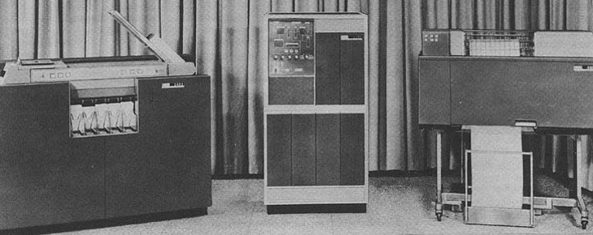

The IBM 1401 introduced in 1959 is used "primarily" as a training device for students enrolled in the Data Processing major, but it has many other uses.
These include keeping all student records for the college and next year, doing the business office's transactions.
One other computer was also used to do small calculating jobs for various departments on campus, it was the Olivetti Programma 101.